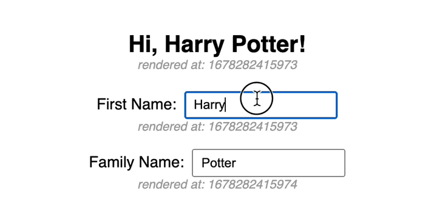
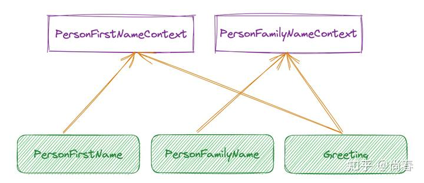
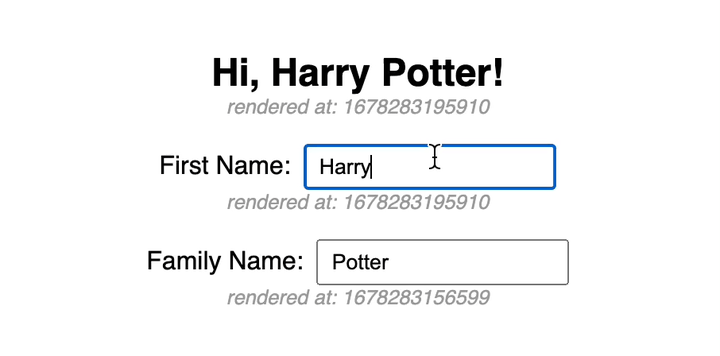
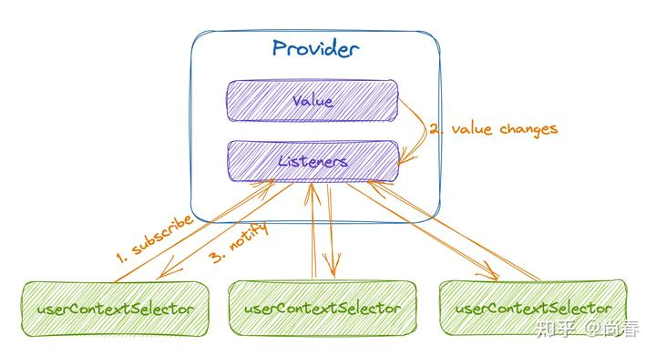
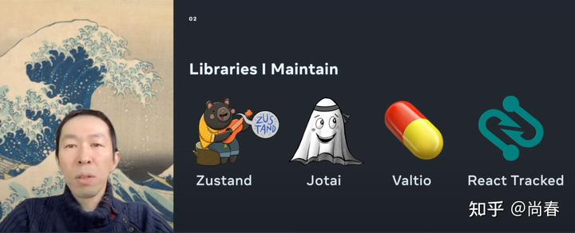
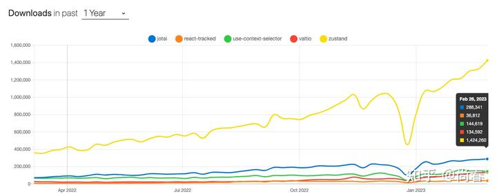

基于 Context 做 React 状态管理
Contents
React Context 在一些弱交互的 Web 应用中被很多人用来作为全局状态管理的利器，理由非常简单：开箱即用，无需额外引入第三方工具，而且毕竟是“亲儿子”，对将来的 concurrent mode 等新特性支持良好。然而在略微复杂些的场景继续使用 context 有时会面临一定的性能问题，目前官方和社区都在探索可能的解决方案。期望通过本文的介绍，能让大家在这方面有一定概要性的理解。
痛点
官方文档中有这样一句话：
Context lets you “broadcast” such data, and changes to it, to all components below.
简单来说，一个 context 中的数据发生变化后，所有下层使用这一 context 的组件都会被更新。当 context 数据越来越多的时候，就会出现一些根本不必要的重复更新。
让我们用一个例子来简单阐释下。假设我们有一个这样的应用：
- 有一个名字的输入框以及一个姓氏的输入框，使用两个组件实现
- 在另一个组件中展示欢迎信息，需要用到上面输入的名字和姓氏
界面效果如下：

因为涉及到跨组件数据调用，我们使用 context 进行名字和姓氏数据的管理。简要代码如下：
1 | // Context & Components |
完整代码见 Codesandbox。
在该应用中，通过使用useContext， Greeting、PersonFirstName、PersonFamilyName三个组件都订阅了PersonContext的更新：

一旦PersonContext的数据有变化，譬如在名字输入框中输入了新的字符，那么不止Greeting和 PersonFirstName组件会被重新渲染，PersonFamilyName组件也会被重新渲染，尽管它并没有任何内容需要变更。

从上图中的时间戳变化可以注意到，输入 first name 时 family name 所在组件也有更新。
这种广播机制导致 context 无法应用在复杂的状态管理场景。目前官方推荐将其用在主题、国际化等变更稀疏的少数场景：
Common examples where using context might be simpler than the alternatives include managing the current locale, theme, or a data cache.
改进一：Split Contexts
一个直观的改进是：既然一个不行，那能不能再加一个？在上面的例子中，我们将PersonContext拆分为PersonFirstNameContext和PersonFamilyNameContext两个 contexts，新的订阅关系如图：

可以看出，PersonFirstNameContext 变更时仅需要更新PersonFirstName与Greeting组件，而不影响PersonFamilyName。
代码改动较多，但思路非常简单，把 reducer 等都拆分为两份，核心部分如下：
1 | export default function App() { |
完整代码见 Codesandbox。
改进后的效果如下图所示：

容易观察到，在输入 first name 时，family name 所在组件并没有更新，反之亦然。因此我们可以确定将耦合性强的全局状态分拆到独立 context 的办法行之有效。
然而，维护多个 context 的成本显而易见，如何将状态进行合理分拆也注定会有一些争议。因此这种方案仅适用于全局状态有限的少数场景中。
改进二：useMemo
另外一个思路是利用 React 提供的useMemohook 来避免无意义的重复渲染。以 PersonFirstName组件为例，可以将其改造如下：
1 | const PersonFirstName = () => { |
完整代码见 *Codesandbox*。
实际效果如下：

可以看出改进效果与分拆 context 的效果基本一致，可以避免重复渲染。更具体的讲，在姓氏输入框中输入新的字符后，代码执行过程大致为：
- 在
PersonFamilyName事件回调中执行dispatch PersonContext的state更新- React 根据之前的
useContext调用定位到PersonFirstName需要重新渲染（暂时忽略PersonFamilyName与Greeting） - 执行
PersonFirstName函数组件，调用useMemo方法获得渲染内容 useMemo发现firstName和dispatch均没有较前值发生变化，直接返回之前缓存的结果，从而避免了无意义的重新渲染
如果对于useMemo等 hooks 不太了解，可以看下本栏之前的React Hooks 原理剖析一文。
这种改进方式理论上是可行的，但在实践中，这一方案需要额外的心智负担和维护成本，一旦涉及到的地方比较多，就会变得异常脆弱。
改进三：useContextSelector
为了解决 context 这种广播机制带来的弊端，除了以上两种渐进改良方案以外，官方和社区也在积极探索更加彻底的方案，目的很明确：可以实现选择性更新。
官方 RFC
早在 18 年，React 团队还聚焦在 hooks 的时候就有这样一个 Issue: Provide more ways to bail out inside Hooks 讨论 context 的可能改进，后来 React core team 的 Josh Story 写了一份 Context Selector RFC 来具体阐释 context 选择更新的设计和实现方案，下面是 RFC 文档中列举的一个示例：
1 | let Context = React.createContext(‘’) |
RFC 的核心内容在于新提议的useContextSelectorhook，类型为(ReactContext<T>, T => S) => S。它在useContext基础上支持第二个参数selector，从而支持仅依赖部分 context 数据的场景，并能做到只有这部分数据更新的时候才触发 hook 宿主组件的更新。 第二个参数省略时，其行为退化为与useContext一致。
目前这个 RFC 还处于 open 状态，但是目前 React 团队还集中在一些 React 18 相关的功能开发上，这个功能还不在他们的确切日程上：
We ran an experiment of the lazy propagation mechanism that showed mildly positive performance results, but we haven’t run an experiment for context selectors yet.
We’re not really blocked by anything, it just hasn’t been a priority while we work on other 18-related projects.
Context selector status and plans? · Discussion #73 · reactwg/react-18
社区版本
虽然官方进度缓慢，但好在 React 社区非常活跃，有一些开发者通过各种黑科技实现了类似官方提议的useContextSelector hook，其中主流的版本为在 React 状态管理工具方面颇有建树的 Daishi Kato 开发的 use-context-selector。
使用 use-context-selector 修改之前的基础示例，核心的变化如下：
1 | const PersonFirstName = () => { |
完整代码见 Codesandbox。
在上面的PersonFirstName组件中，我们有两处调用useContextSelector，分别获取了PersonContext中保存的firstName和dispatch，用于实现名字的输入框。
具体效果如下图所示：

容易观察到，在输入 first name 时，family name 所在组件并没有更新，反之亦然。这说明了 use-context-selector 在避免重复渲染方面非常有效，且相较之前的改进版本更容易理解和掌握。
useContextSelector 实现原理
有些同学可能对useContextSelector的具体实现感兴趣，而且这也是一个不错的 React Hooks 活学活用的机会，那我们接下来就简要介绍一个极简版本的实现方案。
本质上讲，这其实是一个简单的发布/订阅模式，大体思路如下：
- 实现一个自定义的 Provider
- 自定义 Provider 内部维护一个监听函数队列，并在数据发生变化时执行所有的监听函数
- 每个
useContextSelector会在 Provider 中添加监听函数，当其在数据发生变化被调用时，使用 selector 和最新的 context 数据进行计算，并在且仅在计算结果发生变更时更新组件
自定义 Provider
自定义 Provider 的主要功能是保存当前 context 的数据，并维护一个监听函数队列，在数据发生变化时执行这些监听函数。简要实现如下：
1 | function createProvider(ProviderOriginal) { |
该实现有如下要点：
- 基于原生 Provider，从而可以在后续的
useContextSelector实现中通过原生useContext获取 context 数据 - 将传递给原 Provider 的
value进行包装，加入registerListener方法，方便后续在useContextSelector中添加监听函数 - 为了避免
value发生变更时引起所有useContext所在宿主组件重新渲染，使用useRef来保存该值，完全依赖调用监听函数来通知相关组件
创建 Context
基于自定义 Provider，我们下面实现自定义的 context 创建方法：
1 | import { createContext as createContextOriginal } from "react"; |
逻辑非常简单，使用原生createContext方法创建 context 后，将其Provider修改为前面的自定义版本。
实现 useContextSelector Hook
该 hook 的实现思路为：
- 读取 context 中的
registerListener和value - 调用
registerListener，添加监听函数 - 监听函数主要的逻辑为：使用最新 context 数据执行 selector，如果计算结果有变化则触发组件更新
实现代码如下：
1 | import { useContext, useEffect, useState } from "react"; |
可以看到，这里我们应用useState来保存经过selector计算后的值，每次监听函数执行时，直接将新的 selector计算后的新值作为setSelectedValue 参数进行调用，接下来 React 会对比是否和之前的状态一致，如果有变化则触发更新。
至此，我们已经有一个可用版本的 useContextSelector hook 实现了。完整代码见 *Codesandbox*。
真实的实现方案复杂得多，use-context-selector 最新 1.4.1 版本的主文件有 300 余行，会考虑服务端渲染、版本控制、批量更新、concurrent renderring 等等。此外，尽管做了诸多努力，但目前仍然有一些诸如 stale props 的兼容性问题尚待解决。
总结
Context 有着非常简单的概念和 API，是轻量应用管理全局状态的上佳选择。但囿于广播机制带来的性能问题尚未被大范围使用。本文的三个改进逐层深入，分拆多个 contexts、使用useMemo、新的useContextSelector hook 均能解决重复渲染问题。最后的useContextSelector无论是从概念还是用法方面都与useContext非常接近，毫无疑问是上上之选。我们非常期待官方的版本能够加速推出，这样不仅一般的小型应用可以变得更加轻量和简单，之前在 v6 版本中尝试使用 context 进行内部状态管理但遇到性能问题的 Redux 也可以重拾旧爱，更多的工具也可能会应运而生。
参考资料
- Context - React documentation
- 4 options to prevent extra rerenders with React context
- Mastering React Context: Do you NEED a state manager?
- use-context-selector demystified
- Everything You Need to Know about React Context in 2022
- React 18 for External Store Libraries
彩蛋
Daishi Kato 除了开发出 use-context-selector 外，还有 Zustand、Jotai、Valtio、React Tracked 等状态管理工具，可谓是既十分专注又特别高产！

等等，你可能好奇他为啥搞出这么多状态管理工具来？？？很多人都有这个问题，而且真的搞不清楚它们之间的差异，后来 Daishi 贴了这样一张表格回应了下：

这些工具可以按照是否由 React 自身的 useContext/useState/useSelector 进行 store 数据管理分为 interal store 和 external store 两大类：
- use-context-selector、Jotai 都是基于 context 的方案，Jotai 的不同之处在于可以进行状态依赖关系的自动追踪。React Tracked 主要配合
useState进行使用，通过 Proxy 实现了 state usage tracking 进而可以自动避免重复渲染 - Zustand、Valtio 更加类似 Redux，在一个独立于 React 的地方进行集中式数据管理

从 NPM Trends 数据来看，目前这几个工具最流行的是 Zustand，其次是 Jotai，第三是 use-context-selector。希望 Daishi 再接再厉，为社区打造更多精品！
Author: Chun Shang
Link: https://springuper.github.io/react-context/
License: 知识共享署名-非商业性使用 4.0 国际许可协议